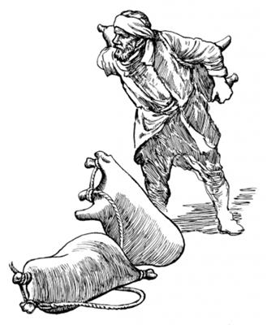

Yesusti Eldi yubu ka'ero neleptopnang samenagne yopsiogha
(Matius 4:18-22; Markus 1:16-20)
5
1 Ik nhon sum Yesus mag longorop mag Genesaret abolag sekamogpa, nimi maikno Allah yubu ka'ebaukap aro kanero sendebel alamek. 2 Sendebel alamekpa, Yesusti tilamoghag agha kabong phende mag abolag aneko piamek. Kabong ngai nimi ikan orop nimi tanekona, sindi ikan liptangtop ag taneko mag a'elelamek. 3 A'elelamekpa Elna kabong nhon nenekoag waelba pulingkiog. Waelba pulingkiog kabong enekona Simondi kabongag pulingkiogti, “Olog ko'oro mag sinag sip tao nembalulam,” seogpa, ko'oro mag sinag sip nembaog. Mag sinag sip nembaogpa, kabongag aneko Yesus pukamogti, nimi maikno mag abolag wamek nimi ambatsiog. 4 Nimi taneko yubu komopto ambatsiogti, Simonag yubu lelamogti, “Kabong ane ko'oro mag sin nusamag tao nembamendi, ikan liptangtop ag sangaro tobog alulom,” aro wene seog.5 Wene seogpa Simondi, “Nai, inipnag saelbaboba pelengelamapba, ot nhon babe liptang kom aghana, ot Andi wene selamne sembe sangaro tobogol pinun,” seog.
6 Wene seogti maghag sangaro tobog aekpa, ikan maikno aghag liptaekpa, tiltilipto yabaog. 7 Tiltilipto yabaogpa, sikin kabo kabong nhon nenekoag wamek nang “Yebel alulom,” aro sae kwarobatsiek. Sikin kabo yaekpa, sindi ikan taneko kabong phende abenekoag lilamekpa, ikan taneko ikinapti kabong abeneko maghag werel wa'inep saog wamog.
8-10 Ikan maikno liptaogne neneko Simon Petrusti kembaogti, Simonap elkabo ni yebelamek nimiapti ikan maikno aghag liptaogha sembe yaghe sembaek. Simon elkaboap awe nikne tolameknang Zebedius elmabo Yakobusap Yohanesapti babe yaghe sembarek. Simon ponekona Yesus yanag yabu sanukto pulingkina, “Nu Saelbamsilamne! Na malia uropne wamna ane sembe Anap nanap nhon wamnep kom saogtina, laploa punululam,” seog.
Wene seogpa, Yesusti Simonag yubu lelamogti, “Log sembaheng kom. Wene anea yepkeneba, andi nimi ero yubu sikne ambarelamsimendi, nanag payahilulom,” aro ambarog.
11 Wene aro ambarogpa, kabong taneko kiliro mag abolag pilpiekti, sindi nia taneko laplobi agha Yesusag neleplamek.
Yesusti nimi kon tena pololamogne wali nembaogha
(Matius 8:1-4; Markus 1:40-45)
12 Yesus ik nhon sum as nhon tanekoag wamog. Wamogpa aneko nimi kabuni nhon eldi kon meneng singina telamogpa, eldi kon niag pololamogti, elel sirik wamogne nhon wamog. Kon pololamog nimi enekori Yesus ibogti, Yesus whingag yabu sanukto u amupto malingkina, “Nai, Andi na, ‘Wali nembanun,’ sembamen tanena, Nai Andi na wali nembanululam, te?” aro molbaog.
13 Wene aro molbaogpa, Yesusti sae nginikom agha nimi enekoag palilamogti, “Na yengdina, an wali nembaghanun. Kut taghale!” seog.
Wene seog abeneko pere nimi enekori kon naikna pololamogne neneko kom taog. 14 Kom taogpa, Yesusti nimi enekoag iriklamogti, “Nari an wali nembaghenne sembe ora nimiag ambatsiseng kom! Aghana memne nimi sae agha Allah sembe pairopne nhonag peket pimendi, waliaba Allah sembe pimnepne elag pabululam. Waliaba pabululamnena, Musari samenag, ‘Kon naikna urop nimi wali tale tanena, Allah sembe pimnepne payalul,’ aro mome toro paibog yubu sunsunum uro pabululam. Pabimendi, memne Allah sembe pairopneag aghabog ambarel pimendi, ‘Wali nembamnel,’ aro ambatlulam. Ambarel pimenba, kembaghelenge pere agha an wali nembaghenne sembe kekneba sinag uro yabileba, nimiri el tanep,” seog.
15 Wene seog aghana, Yesus sembe yubu eneko sabo tangto nubu taog. Nubu taogpa nimi maikno yalamekti, “Eldi yubu ka'elamebeba, naikna naiklamapne nu wali nembahilul,” aro Yesus yaghag yalamek. 16 Aneko yubu ambatto wali nenelamsiogha lamba nimi oroghag piogti, sop-sop Allah omekto molona mololamog.
Yesusti lebe arop kom nimi wali nembaogha
(Matius 9:1-8; Markus 2:1-12)
17 Ik nhon sum Yesusti yubu ambarelamsiogpa, Yahudi nimi agha Farisi nimi etbareap Allahri Musaag aruksirop yubu amohirop nangap babe wamek. Sin taneko mog so'o Yudea agha, Galilea so'o agha as tala-tala ni kanero wamekne agha, as soro kalurop as Yerusalem agha babe yaekti, “Ka'ebaukap,” aro pukamek. Nu Saelba Uhiropne Imagne ponekori mikipne Yesusag pibog andarina, Eldi nimi naiktopne wali nenelamsiog. 18 Sumeneko sum nimi etbareri lebe arop kom nimi nhon morea kalag keyapto, “Ae lomag poa wa'iberi, Yesus whingag pilbukap,” aro ulamek. 19 “Pilbukap,” aro ulamek aghana, nimi maiknori sendebel alamekpa, poa wa'inep kom. Poa wa'ana eraruk uaogpa, imaghag waelbongkia imag soroba kwerekaekti, imag phoro morea kal anekoap nimi maikno nusamag agha Yesus whingag lebe arop kom nimi eneko pelengkibek. 20 Pelengkaekpa Yesusti kembahiogpa, sin payaek nimi tanekori, “Wali nembatsilul,” aro Yesusag wana pimna agha payaekne ipsiog. Kembahiogti lebe arop kom nimi enekoag yubu lelamogti, “Nangkae, andi mali-malia uaomne Nari kom nembanba, tam orog tal,” seog.
21 Wene seog aghana sin Musari aruksirop yubu amohirop nangap, Farisi nimi tanekoapti sin wanaag hairo seneraglameknena, “Elna etne wamlari Allah san tiliplamla? Nimi etneri agha nimiri malia uropne kom nembanep? Eldi, ‘Mali-malia uaomne kom nemban,’ aro leplangena, ot Allah Eldamneriog lemnep,” aro wanaag seneraglamek.
22 Wene aro seneragto wanaag hailtalamekne Yesus eltaogti, “A'undi wanaag ‘Lepso kom,’ senelamlomne nene sa'ambe seneraglamlom? 23 Mog so'oag nimiri nimiag, ‘Andi malia uaomne tam orog tal,’ seheng tanena, mali-malia aneko sik uro tam kom tanep te? Mog so'oag nimiri nimi enekoag, ‘Seke! Wali pululam,’ aro yubu ambatseng tanena, sik uro yabinep te? Ni yubu phende abeneko mog so'oag nimiri mo yubu lepseng tanena, nhon babe uro yabinep te? 24 Aghana a'undi Na sembe el tahom senelamnari, lag nembanun. Na mog so'oag nimi tahinge saeag Allahri mikipne pibog andarina, nimiri mali-malia uropne sembe nari tam orog nembanep. Kembamundi el talulom,” seogti, lebe arop kom nimi enekoag yubu lelamogti, “Anag lemnuan. Seke! Andi morea kal saelba andi aeag palame!” seog.
25 Wene seog abeneko pere nimi ni tanekori kemelamekpa, lebe arop kom nimi eneko pukom agha sekogti, elenge morea kal aneko, “Pabinun,” aro tobogpa, kemelamek. Wali taog nimi enekori Allah omek-omek palamogti, morea kal aneko eldi aeag pabiog. 26 Wali nembaogpa, Allah omek-omek palamogpa, nimi ni tanekori haingdi ibekti, yubu lelamekti, “Yaghe, ane mane agha ual! Tam undopne nu olog irop komne uro yabil,” aro lo'om seekti, Allah omeklamek.
Yesusti Lewi yobogha
(Matius 9:9-13; Markus 2:13-17)
27 Neneko uro yabiogpa, Yesus aneko lambaogti tilamogpa, nimi nhon sina Lewi, Alfeus elme tilamog. Lewi poneko mog so'o aneko nimi saelba uhiropnang yubu eptopne wamog. El ponekori nimi so'o anekoag aruklamsiognena, “Roma nimi sembe kal ma'al pogto nanag palilamlulom,” aro aruklamsiog. Aruklamsiogpa, payalamekpa, kal ma'al tipto iliyabo saeag tarelamsiog. Lewi ponekori sop-sop kal ma'al poloro tolamogti, sumeneko babe torop aeag pukamogpa, Yesus yabalamogti, Lewi pukamogha ibog. Yesusti Lewiag, “Anna nanag neleplamnululam,” seogpa, 28 Lewi poneko sekom agha ni taneko liloa lebogti Yesusag nelebaog. 29 Lewi ponekori, “Yesusap kwaneng nhon tukap,” aro eldi aeag sani yobaog. Yobaogpa kwaneng tel alamek nimina, Lewi elkabo saelba uhiropnangdi yubu eptopnang “Kal ma'al payae,” aro aruksiropnang maikno babe wamek. Ora nimi sin sembe nimiri, “Sikin malia ulamang,” senehirop nimi babe, Lewiri aeag yaekti, Yesus yubu ka'ero neleptopnangap kwaneng nhon telamek. 30 Kwaneng nhon nikag telamekpa, Farisi nimi etbareap sindi seneragna nhon seneraglamek nimi agha Musa yubu amohirop nangapti kembahaiekti mali sembaek. Mali sembaekti, Yesus yubu ka'ero neleptopnang yaekti, yubu lelamekti, “Sa'a sembe a'un nhin Roma nimi sembe kal ma'al poloro torop nimiap, nimi malia urop nimi taneap kwaneng nikag telamlom?” aro haibahiek.
31 Wene aro haibahiekpa, Yesusti samoro ambarelamsiogti, “Nong wali nimiri wehesirop nimi sembe, ‘Yepneho,’ senelamang kom. Ot niktop nimiri aghabog wehesirop nimi sembe, ‘Yepneho,’ senelamang. 32 Ane saog uro, na so'oag, ‘Yepsinun,’ aro yahinge nenena, nimiri sindam nimi sembe, ‘Na malia urop nimi,’ aro el tahoba, nimi neneko yepsinun. Nana sin undop nimi sembe, ‘Yopto yepsine andarina, sindi malia uropne lilobi agha Allahri senenne sunsunum uro seneraglamukang,’ aro yahi. Ora nimiri sindam nimi sembe, ‘Na malia uan koma ulamna,’ seneptangtop tanena, nimi neneko sembe yopto yepsinun kom,” seog.
“Allah omekto molona molbaukap,” aro kwaneng mag ten koma uropne sembe Yesusti ambatsiogha
(Matius 9:14-17; Markus 2:18-22)
33 Farisi nimi tanekori Yesusag lelamekti, “Yohanesti yubu ka'ero neleptop nimiap, Farisi nimiap abenekori, ‘Allahag moloro omeklamukap,’ aro kwaneng ten koma omekto ulamang aghana, andi yubu ka'ero neleptop nimi tanekori kwaneng mag telamang,” aro hairo ambarek.
34 Wene seekpa, Yesusti samoro ambarelamsiogti, “Na so'oag wamnaag abenena, nanag neleptopnang kwaneng tero kom-kom wamseng kom. Sunumna ambatsinun. Nimi nhondi kel torop tanena, elkaboap ma'ap tahengdi, kwaneng telamseng te? Ane saog uro nanap, na neleptopnangap nimi pali wamapti, nu nikag wamapne abeneko nu kwaneng ten koma wamnep kom. 35 Aghana ik nhon sum kel toropne poneko nimiri salero pabik tanena, elkabo kwaneng ten koma wamukang. Ane saog uro na amik sum wamne kom tanena, nari yubu ka'ero neleptopnang kwaneng ten koma wamukang,” seog.
36 Wene aro ambatsiogti, sunumna nhon nen yubu likipto ambarelamsiogti, “Ag samenag wirop ag wamsoba, ag eneko tilipto yabiho tanena, ag wiroba wendogne taebom agha nimiri ag samenne wetnelamseng kom. Ag wendogne taebom agha leknero wetnebaheng tanena, wendog ag eneko babe ta'epna agha loba wamlul. Abenekoapna, ag wendogne ta'ebom agha samenneag leknero wetnebaheng tanena, ‘Ni phende abeneko nikag sunsunum kom,’ sembaheng.
37 Nen sunumna nhon ambatsinun. Nimi nhondi anggur wana lolterop mag topsori, mag tero lina pham kambing kon agha wetnerop ag mag nene tero lirop. Anggur wana weneog lolterop mag tero lirop tanena, pham kambing kon agha wetnerop ag samenne ag tero lirop kom. Anggur lolterop mag neneko kon agha wetnerop ag tero lirop tanena, anggur mag nene agha ibya lanalamlori, kon agha wetnerop ag eneko nubu nenelamlo. Nubu nembaleba, kon agha wetnerop ag samenne pulugamsoba, kon serero langtukto phobaho tanena, kon agha wetnerop ag babe, anggur loloterop mag babe loba tanep. 38 Ane sembe, nimiri anggur wana lolterop mag wendogne aghag tero lirop tanena, sop-sop ot kon eren kon agha wetnerop aghag tero limnep. Kon agha wetnerop ag samenneag tero limnep kom. 39 Ane saog uro nimiri babe mag anggur samenag mag eneko telamleri, ‘Samenag anggur lolterop mag agha sao wali. Wendog lolterop mag neneko karong,’ selul. Samenag loloterop mag terop nimiri wendog lolterop mag telul kom,” aro Yesusti Farisi nimiag ambatsiog.a

Nimiri pham kambing kon agha mag tero lina wetnerop. (5:39)